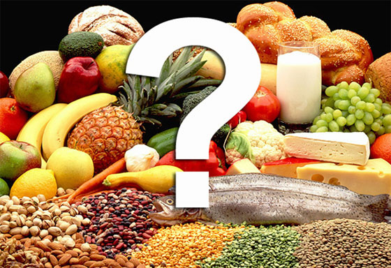
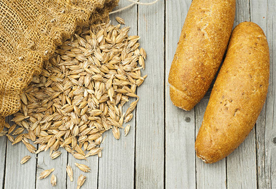

Давно известен тот факт, что существует ряд продуктов, употребление в пищу которых может быть полезным для головного мозга. Однако за последние пару лет появились исследования, ориентированные на то, как некоторые пищевые продукты и режимы питания могут приводить к нарушениям неврологических и психических функций. Серия публикаций будет посвящена именно этому вопросу.
Давно известен тот факт, что существует ряд продуктов, употребление в пищу которых может быть полезным для головного мозга. На этот счёт существуют многочисленные данные, в том числе относительно лосося, снижающего риск развития инсульта, и кофе, купирующего депрессию. Но за последние пару лет появились исследования, ориентированные на то, как некоторые пищевые продукты и режимы питания могут приводить к нарушениям неврологических и психических функций.
Диета и деменция
Некоторые учёные считают, что существует определённая взаимосвязь между употреблением углеводов и клейковины и риском развития слабоумия. Они выступают в защиту низкоуглеводной диеты с высоким содержанием жиров. Их мнение подтверждается данными растущего числа исследований, связывающих богатый углеводами рацион с высоким риском умеренных когнитивных нарушений (УКР) и деменцией. Существуют доказательства того, что диеты с высоким содержанием углеводов приводят к увеличению гликирования белков — процессу, который усиливает воспаление, выработку свободных радикалов, а также окислительный стресс, тем самым повышая риск возникновения деменции.

По данным проспективного исследования среди более 2000 участников, опубликованным в New England Journal of Medicine (NEJM) в августе 2013 г., было выявлено, что даже незначительное повышение сахара в крови связано с повышенным риском слабоумия. Основываясь на результатах, авторы пришли к выводу, что более высокие уровни глюкозы могут быть фактором риска развития деменции, даже среди лиц, не страдающих диабетом. Последующее исследование, проведённое врачами из клиники Майо, показало, что у лиц, в рационе которых было высокое содержание углеводов, риск развития УКР увеличивался на 89%; а у тех, кто предпочитал высокое содержание жиров, риск уменьшался на 44%. В докладе, опубликованном в журнале Lancet Neurology в 2011 г., сообщалось, что 54% случаев болезни Альцгеймера (БА) в Соединённых Штатах можно было бы предотвратить путём изменения образа жизни, что включает нормализацию массы тела и умеренную физическую нагрузку. Эффективным способом снижения сахара в крови, согласно исследованию «A ТО Z», является низкоуглеводная диета с высоким содержанием жиров.
Однако не стоит торопиться с выводами, так как существует и другая точка зрения. Противники такого подхода приводят пример жителей Японии. В 1980 г. в этой стране диабет встречался редко, хотя наиболее распространённым продуктом в рационе японцев являлся рис, для которого характерно очень высокое содержание углеводов. Затем, за счёт веяний западной культуры, мясо стало вытеснять рис из рациона, что увеличивало потребление жиров и снижало потребление углеводов. При этом за 10-летний период (т.е. с 80-х гг. по 90-е гг. прошлого века) распространённость диабета у взрослых старше 40 лет возросла с менее чем 5% до 11-12%. Очевидно, что причина данного явления заключается не в углеводах. Скорее, увеличение потребления жиров приводило к развитию инсулинорезистентности.
Кроме того, учёные призывают не забывать о разнообразии углеводов, т.е. и чечевица, и леденец — это всё углеводы! И не стоит игнорировать положительное влияние диеты высоким содержанием углеводов на здоровье человека. Существуют данные о связи высокоуглеводной диеты, основанной на продуктах растительного происхождения, включая цельнозерновые, с профилактикой хронических заболеваний, регрессией атеросклероза, долголетием и повышенной жизненной активностью. Ряд исследований связывают диеты с высоким содержанием углеводов со снижением риска сердечнососудистых заболеваний и, наоборот, рацион с низким содержанием углеводов и высоким содержанием жира с нарушением функции эндотелия, что приводит к увеличению риска сердечно-сосудистых заболеваний. А для растительной диеты с употреблением зерновых продуктов характерен благоприятный метаболический профиль. Также учёные указывают на то, что долгожители, в меньшей степени склонные к развитию деменции, как правило, придерживались растительной диеты, включавшей зерновые продукты.

Brain Food: What to Avoid
Medscape